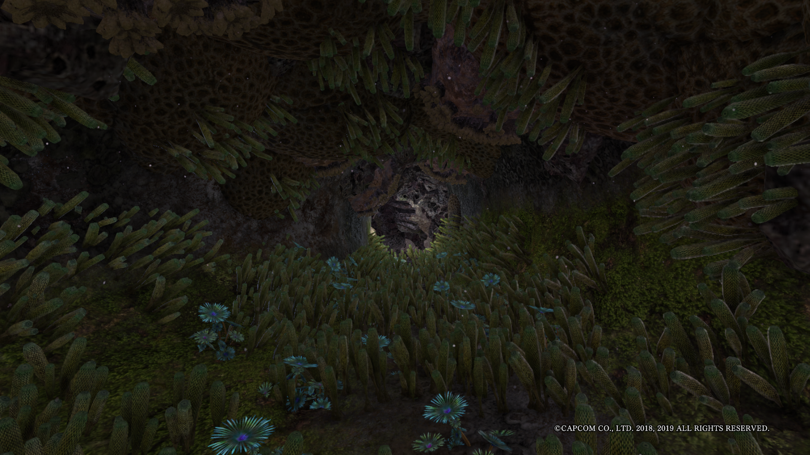
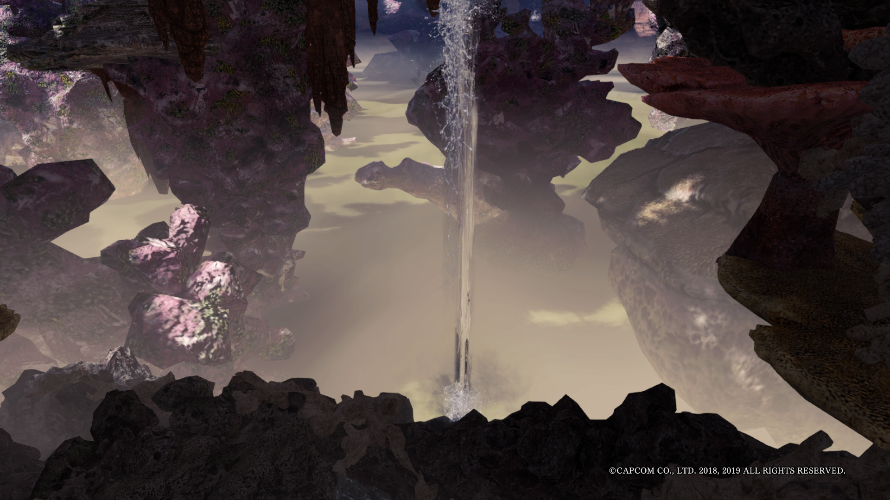
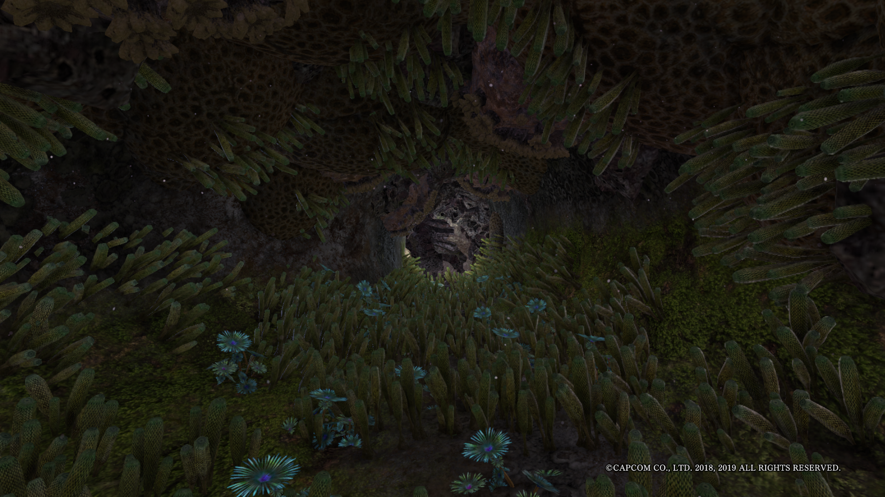
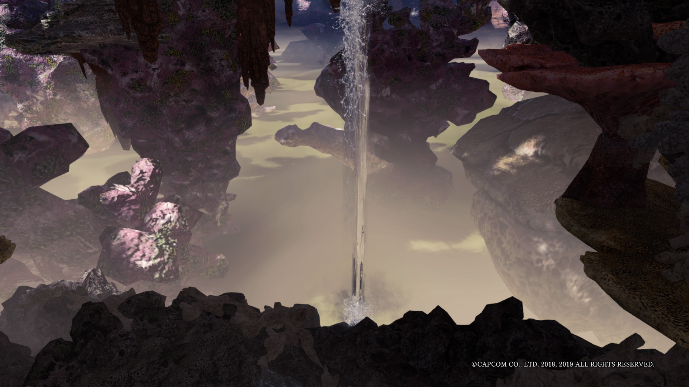
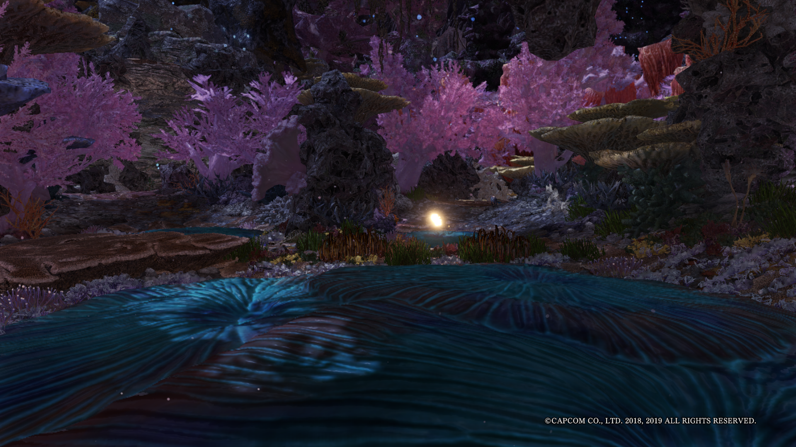
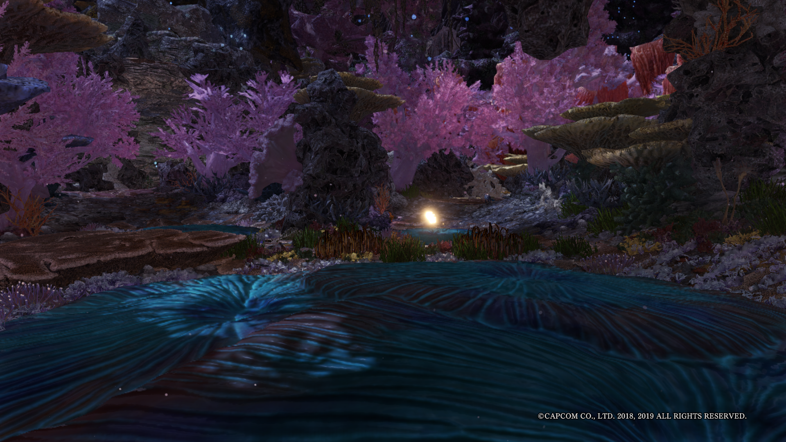

Geografi
Coral Highlands merupakan sebuah lokasi di game Monster Hunter World & Monster Hunter World: Iceborne. Lokasi ini terdiri dari 15 area, dimana 15 area ini bisa dikategorikan menjadi 2 tipe yaitu sebuah Lower Section and sebuah Highlands. Dimana area 1-7 dan 9 termasuk lower section dan area 8 dan 10-15 termasuk Highlands. Terdapat 2 buah camp di lokasi ini, yaitu area 1 dan area 12, juga terdapat 2 buah jalan pintas yaitu dari area 3 ke area 8 dan area 5 ke area 11. Lokasi ini unik karena lokasi ini berada tepat di atas lokasi lain yang bernama Rotten Vale. Lokasi ini memiliki banyak koral yang bewarna-warni, koral-koral ini menggunakan angin kencang di beberapa bagian dari Coral Highlands untuk menyebarkan polip-nya. Angin kencang ini juga bisa digunakan oleh seorang hunter sebagai jalan pintas jika hunter tersebut menggunakan sebuah glider mantle (area 12 dan 15). Lokasi ini juga memiliki 2 area rahasia dimana salah satu area rahasia ini menunjukkan hubungan antara Coral Highlands dan Rotten Vale dengan memperlihatkan bagian bawah Coral Highlands/Rotten Vale.


 





 
